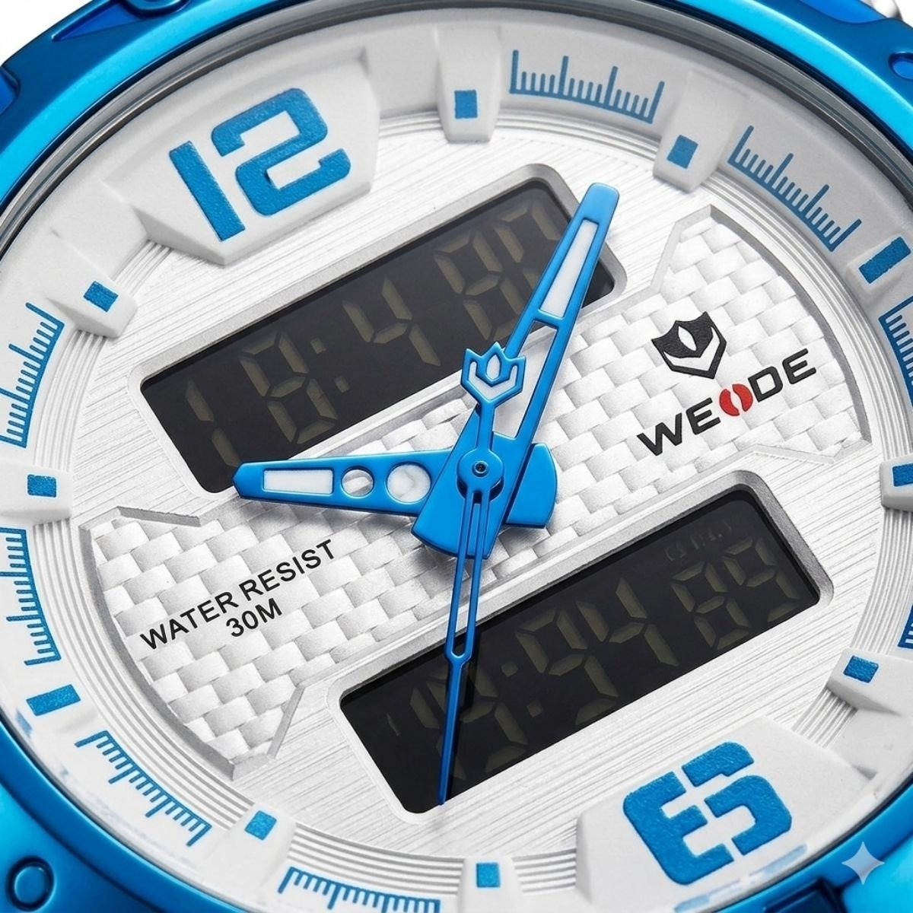

01. The Master Hero Shot
Editorial close-up hero shot of a luxury wristwatch. High-end commercial advertisement style, hyper-realistic, 8k resolution. The watch is positioned perfectly upright, centered, and fully aligned. Lighting features a large diffused softbox from the top-left, creating smooth, clean gradient highlights on the bezel and dial. Deep negative fill technique creates rich black shadows on metallic edges, eliminating grey haze and unwanted reflections. High-definition brushed metal textures and scratch-free sapphire crystal. Powerful silhouette against a pure white background. Shot as if using a Hasselblad X2D with a 100mm Macro lens, f/11 aperture for edge-to-edge sharpness, and ISO 100.
